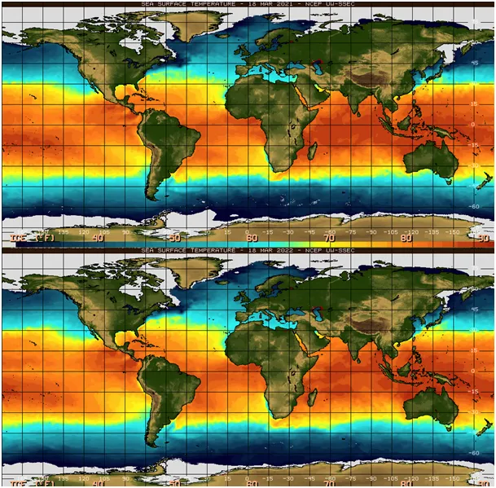
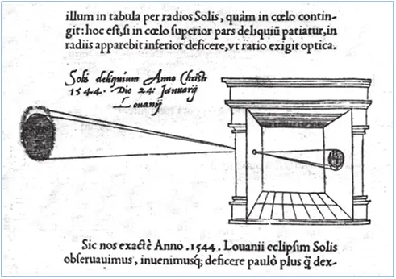
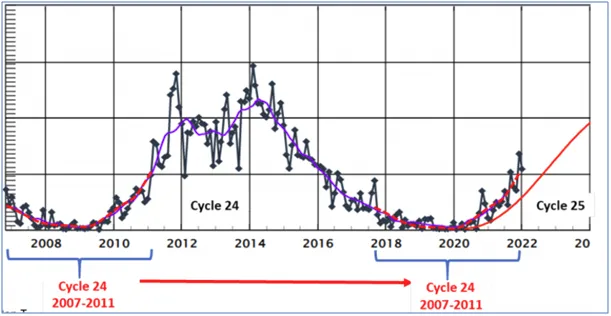
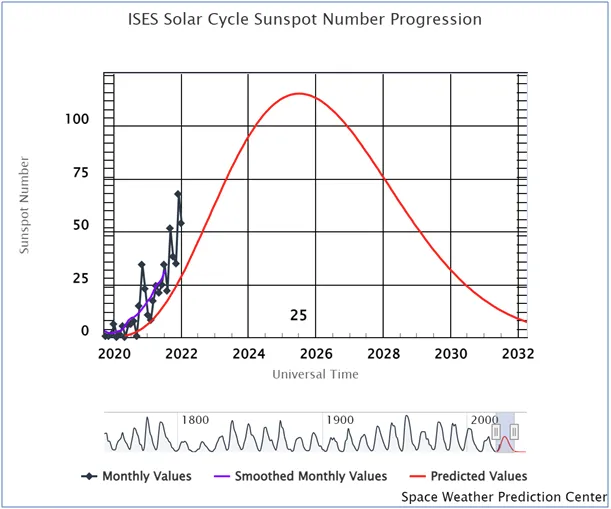

Spaleni Słońcem 2
Marzec w Polsce to zazwyczaj czas kapiących z dachu sopli i topniejącego śniegu. Niestety nietypowy silny wyż od wielu tygodni rozpieszcza nas słoneczną pogodą i zerowymi opadami. Już pisałem w lutym, że z powodu niskiej temperatury w basenie Morza Śródziemnego nie powstają mokre niże, które w Polsce powodowały od zawsze śnieżyce lub deszcze.

Zimno jest w Afryce północnej i na Bliskim Wschodzie. Grafika pokazuje temperaturę oceanów 18 marca 2021 i 18 marca 2022. Widać, że wody wokół Cypru są chłodne (błękitne) bliżej 16 stopni Celsjusza niż spodziewanych 18-19. W skali potężnego zbiornika wodnego to olbrzymie ilości energii, które na skutek zimnych wiatrów z centralnej Azji, przez kilka miesięcy zmieniły typowy układ w anomalię. Odradzam myślenie kategoriami "ruchu skrzydeł motyla", to mit. Małe lokalne zmiany w układzie termodynamicznym są szybko "rozmyte" przez duże zmiany układu.
Napędem naszego układu jest Słońce. I cykliczne zmiany jego aktywności skutkują zmianami w całym Układzie Słonecznym. Aktywność Słońca obserwujemy od setek lat dzięki potężnym plamom, jakie na jego powierzchni widać nawet przez prymitywny przyrząd astronomiczny. Podobno wystarczy np. pudło z dziurką po szpilce (Camera obscura), warto sprawdzić, ale nie wolno patrzeć na słonce tylko trzeba wyświetlić obraz słońca na marmurowym stole w ciemnym pokoju.

Od dwóch lat Słońce wychodzi z minimum kolejnego cyklu, ale robi to szybciej, niż zwykle. Nadrabia spóźnienie z cykli poprzednich? Cykle mają ok. 11 lat, ale już wiemy, że istnieją też cykle dłuższe, mające setki lat. Ile dokładnie dowiemy się za lat ok. 500 lub więcej.
Obecny cykl, mimo, że jest niecierpliwy nie powinien być cyklem o dużej energii, w połowie XX wieku i wcześniej mamy za sobą okresy znacznie większej aktywności Słońca.
Mimo, że na dalekiej północy pokrywa lodowa jest bardzo podobna do tej z roku ubiegłego to w Europie południowej i Afryce jest wyjątkowo zimno, co jak pisałem, przekłada się na susze w naszym regionie.


Krzewy zaczęły już puszczać liście, co oznacza, że zaczyna się okres wegetacji roślin. Ziemia w Polsce jest już bardzo sucha a widoki na marne opady są dopiero pod koniec marca. Jeśli deszcz nie nadejdzie, to zboża i inne uprawy słabo zaczną swój sezon wegetacji. To wróży tylko jedno, inflację w koszyku spożywczym. Węgrzy, Egipt i wiele innych państw już zakazały eksportu zbóż i innych surowców spożywczych a ceny na świecie wzrosły wyjątkowo. To kusi i sprzedajemy nasze zapasy za coraz mniej warte euro i dolary. Gdy dołożymy do tego 10% więcej konsumentów na polskim rynku wniosek jest prosty: duża inflacja.
Paweł Klimczewski